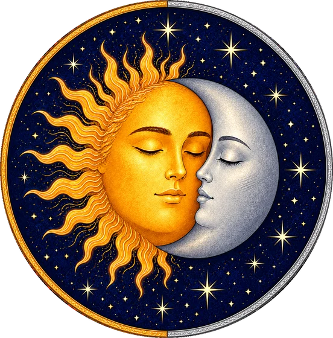
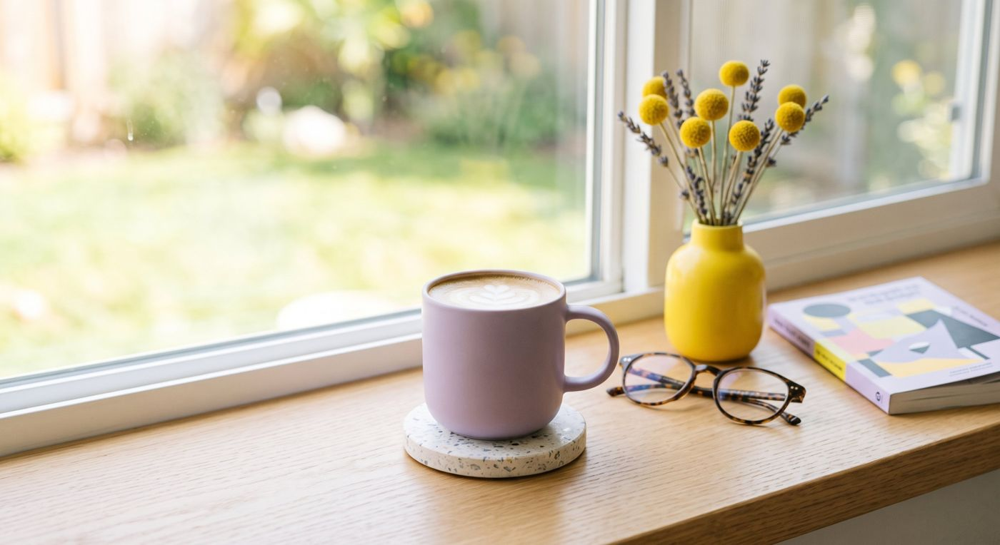

La teva carta natal és com una empremta digital: única i irrepetible. Aquí comparteixo el llenguatge simbòlic de l'astrologia per mirar-te amb més comprensió i viure segons la teva pròpia essència.

Reflexions sobre la carta natal, els trànsits i els símbols que ens ajuden a entendre per què som com som.

Vaig estudiar la carrera de Pedagogia i Psicologia i anys més tard els estudis d'Astrologia Psicològica.
Des de petita m'ha interessat saber per què som com som. Sempre he estat molt observadora i m'ha agradat molt escoltar, perquè quan una persona és observadora i es fixa en els detalls pot aprendre de tot i de tothom.
Conèixer-se a un mateix és fonamental per viure segons la pròpia essència i tenir criteri propi.
La lectura de la carta natal va ser un moment profundament revelador. A partir d'aquest moment l'Astrologia em va interessar cada cop més. Vaig anar descobrint un coneixement que em va fascinar i cada cop tenia més ganes de saber-ne més. Això em va portar a estudiar, formar-me, llegir cada cop més, i compartir els meus coneixements.
Per mi l'Astrologia Psicològica et permet veure't des d'una mirada més compassiva, a tu mateix/a i als altres, et permet ser tu mateix/a entenent que cada persona és única literalment i la seva carta natal és com una empremta digital, és la seva empremta astral.
Pot semblar estrany al principi, ja que no és convencional i no estem acostumats/des a pensar des d'aquest llenguatge, però quan t'endinses en aquest món és fascinant.
Allà comparteixo cada setmana els trànsits del moment, les llunes noves i plenes i petites reflexions per acompanyar-te en el dia a dia.
Segueix La Teva Estrella